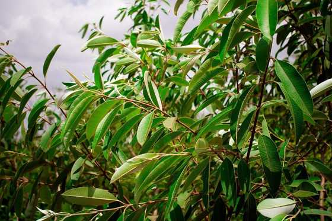
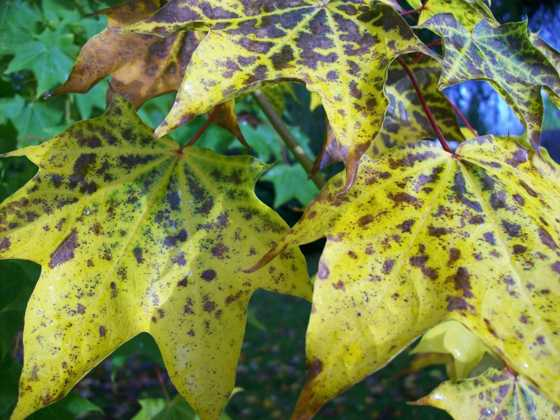
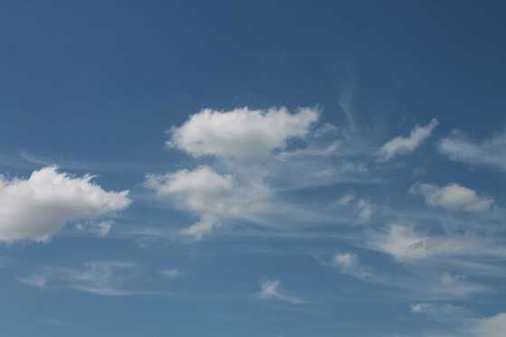
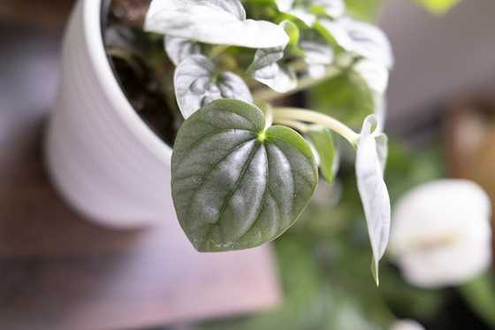
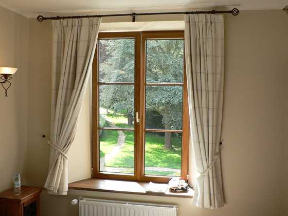
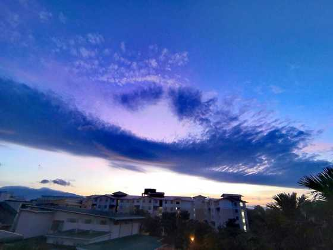

lunch / coffee / sweets
季節を食べる、
熊野のごはんと珈琲。
熊野の季節の素材でつくる、二十四節気ごはんと珈琲と菓子。
lunch / coffee / sweets
熊野の季節の素材でつくる、二十四節気ごはんと珈琲と菓子。
写真はフリー素材のイメージで、国外・撮影地不明のものを含みます。店舗の実際の様子ではありません。
ABOUT
三重県熊野市井戸町の「あお」は、Instagramのプロフィールで「熊野の季節の素材でつくる二十四節気ごはんと珈琲と菓子」と紹介されている、食堂と喫茶を兼ねたお店です(lunch / coffee / sweets)。
Instagramのハイライトには、金木犀シロップ、自家製柚子胡椒、味噌仕込み、梅干し、梅仕事といった、季節ごとの仕込みの話題が並びます。旬の素材に手をかけ、暮らしの中で使っていく。このページはその姿勢を、季節の色で表しました。
「あお」という店名の意味・由来は確認できていないため、触れていません。内容はInstagramの公開情報に基づきます。




MENU
具体的なメニュー名・価格・営業日は 準備中。最新の営業日はInstagramでご確認ください。



VOICE
季節のことを教えてもらいながら食べるごはんは、体にすっとなじみました。食後の珈琲もゆっくり味わえます。
手づくりの仕込みの話が聞けて楽しかったです。お菓子も季節らしくて、持ち帰りたくなりました。
窓の外の景色を眺めながら、のんびり過ごせました。また季節が変わったら来たいです。
上の3件は制作側が作成したイメージ例で、実在のお客様の声ではありません。





ACCESS
| 所在地 | 〒519-4324 三重県熊野市井戸町806-3 |
|---|---|
| 電話 | 準備中 |
| 営業時間 | 準備中 |
| 定休日 | 準備中 |